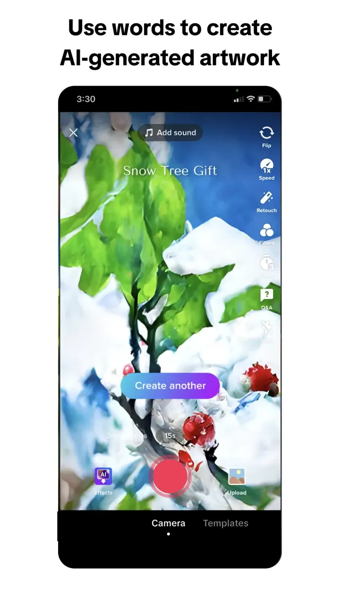

TikTok 的深色移动主题，以全屏视频、玫红动作色与青红错位品牌效果为核心。
TikTok dark mobile theme with full-bleed video, rose actions, and chromatic accents.

#010101: #010101#FE2C55: #FE2C55#25F4EE: #25F4EE#FFFFFF: #FFFFFF#161823: #161823#2F2F2F: #2F2F2F#E5E5E5: #E5E5E5display: Proxima Novabody: Proxima Novaprimary: Proxima Novamono: ui-monospacefallback: -apple-system,BlinkMacSystemFont,SF Pro Text,Inter,Segoe UI,Roboto,Helvetica,Arial,sans-serifhints: Proxima Nova,Proxima Nova,ui-monospacecontrol: 4pxcard: 8pxpreview: 12pxpill: 500pxcircle: 50%scale: 0px,4px,8px,12px,500px,50%source: design-mdbase: 4pxscale: 4px,8px,12px,16px,20px,24px,32px,48px,64px,96pxsource: design-md